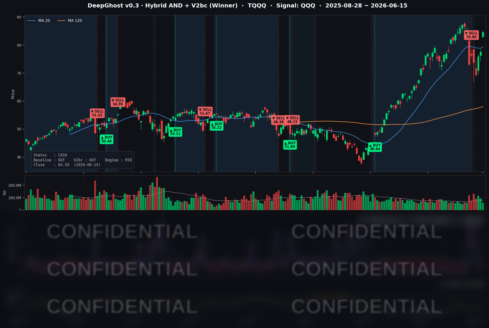

미국·이란 평화 합의로 유가가 빠지고 나스닥이 +3% 넘게 급등했습니다. 트럼프가 전쟁을 끝냈습니다. FOMC까지는 시장이 환호할 것이고, 결과는 동결이 확실시 됩니다. 캐빈워시 신임 의장이 시장에 찬물을 끼엊는 발언은 하지 않을 것 같습니다. 당분간 나스닥은 전고점을 뚫으려는 시도를 할 것 같습니다. 하지만 늘 그렇듯 예측일 뿐, 내일 또 어떻게 될지 모릅니다. 시장에 겸손하게 대응만 하시기 바랍니다.
📊 오늘의 매매 신호
| 항목 | 내용 |
|---|---|
| 오늘 할 일 | ✅ 아무것도 안 해도 됩니다 |
| 포지션 상태 | 💵 현금 보유 중 (OUT OF POSITION) |
| 현금 보유 기간 | 2026-06-08 ~ 2026-06-15 (청산 5일째) |
| TQQQ 종가 | $84.59 (+9.12%) |
모델은 오늘도 현금 보유 상태를 유지했습니다. 다만 장 마감 후 모델 내부 신호는 매수존을 향해 꾸준히 내려오고 있어, 내일 크게 하락하지 않으면 매수 신호가 발행될 수 있습니다. 우리 AI모델은 시장에서 살아남는 것을 최우선으로 동작합니다. 위험이 감지되면 빨리 탈출하는게 목표이며, 직전 매도 시그널이 발어되었던 날 그렇게 동작했습니다. 미래는 예측할 수 없습니다. 포모(FOMO)에 휩쓸리지 말고, 매수 신호가 나오면 그때 차분히 대응하면 됩니다. 계속 말씀드리지만 단기간 큰 차익을 바라시는 분은 여기 계시면 안됩니다.
TQQQ 시그널 — OUT OF POSITION
현재 상태: 현금 보유 중 | 매수 신호 발동 직전 대기

오늘 TQQQ 종가는 $84.59로 하루 만에 +9.12% 급등했습니다. QQQ가 +3.14% 오른 결과입니다. 하지만 이런 강세에도 모델은 아직 현금을 들고 있습니다. 6월 8일에 약 +70% 수익으로 레버리지 포지션을 정리한 뒤, 오늘로 5거래일째 관망 중입니다.
시장이 추세가 계속된다면 예상되는 신규 매수 신호 시점이 6월 17일 FOMC(연준 회의) 발표일과 겹칠 수 있습니다. 모델은 일정표를 보지 않기 때문에 만약 매수 신호가 나온다면 연준 이벤트의 변동성을 첫날부터 떠안는 진입이 됩니다. 복잡할 수도 있지만 모델은 과거 50년 모든 주식 데이터를 학습하였기 때문에 경험적으로 가장 좋은 방향으로 결정하여 알려줍니다. 살지말지 고민할 필요는 없습니다.
오늘 미국 시장 — 시황 요약
지수 마감
| 지수 | 종가 | 등락률 |
|---|---|---|
| S&P 500 | 7,554.29 | +1.65% |
| 나스닥 종합 | 26,683.94 | +3.07% |
| 다우 존스 | 51,671.03 | +0.92% |
| 러셀 2000 | 2,965.09 | +0.72% |
대형 기술주가 주도한 하루였습니다. 나스닥(+3.07%)이 다우(+0.92%)와 소형주 러셀 2000(+0.72%)을 크게 앞섰습니다. 위험선호가 돌아왔지만 자금은 반도체·빅테크에 집중됐고, 소형주는 상대적으로 소외됐습니다.
국채 금리 동향
| 만기 | 수익률 | 전일 대비 |
|---|---|---|
| 3개월 | 3.618% | 변동 없음 |
| 5년 | 4.188% | -2.5bp |
| 10년 | 4.469% | -1.8bp |
| 30년 | 4.971% | -0.4bp |
단기 금리(3개월)는 사실상 고정이었고, 중기물(5년·10년)이 소폭 내렸습니다. 10년물에서 3개월물을 뺀 장단기 스프레드는 +85bp로 정상적인 우상향 형태를 유지했습니다. 유가 급락이 향후 물가 부담을 낮추는 방향이라, 중기 금리가 살짝 내린 것과 결이 맞습니다. 이날 랠리의 주역은 금리가 아니라 지정학 리스크 해소와 AI 반도체 모멘텀이었고, 금리는 우호적인 배경 역할을 했습니다.
연준 발언 & 금리 패스
연준 위원의 공개 발언은 없었습니다. 6월 15일은 6월 FOMC(16~17일) 직전의 블랙아웃 기간(6/6~6/18)에 해당해, 정책 관련 발언이 금지되기 때문입니다. 시장은 온전히 지정학·실적 재료에 반응했습니다. 다음 변동성의 방아쇠는 6월 17일(수) 연준 성명과 점도표(dot plot) 입니다. 금리 동결이 컨센서스이지만, 향후 금리 경로에 대한 연준의 톤이 매파(긴축 선호)로 기울지가 관건입니다.
오늘의 핵심 이슈
- 미국·이란 평화 합의 → 유가 4%대 급락. 전쟁 종식과 호르무즈 해협 재개통을 담은 양해각서(MOU) 합의가 발표되며 중동발 지정학 프리미엄이 빠르게 빠졌습니다. WTI는 -4.19%($81.32), 브렌트유는 -4.16%($83.70)로 내렸고, 위험자산 전반에 강한 우호 재료로 작용했습니다.
- AI 메모리 슈퍼사이클 — 마이크론(MU) +10.84% 폭등. 마이크론의 2026년 HBM(고대역폭 메모리) 생산 물량이 이미 완판됐다는 소식과 분석가 목표주가 상향이 겹치며 하루 +10.84% 급등, 메모리·반도체 섹터 전체를 끌어올렸습니다. 6월 24일 실적 발표가 다음 분기점입니다.
- 나스닥 주도 위험선호 전면 복귀. 지정학 해소와 AI 모멘텀이 합쳐지며 빅테크가 일제히 상승했고, 변동성 지표 VIX는 8% 넘게 빠졌습니다.
변동성 & 투자심리
- VIX(공포지수): 16.20 — 전일 17.68 대비 -8.37% 하락. 변동성 우려가 빠르게 가라앉으며 위험선호 복귀를 확인시켰습니다.
- 공포탐욕지수(Fear & Greed): 개선됐지만 여전히 '공포(Fear)' 구간에 머무는 것으로 전해집니다. 지수와 주가는 강했지만, 투자심리의 회복은 한 박자 늦게 따라오는 모습입니다. "낙관 속 잔존 경계"가 공존하는 셈입니다.
매크로 & 원자재
- 유가: WTI $81.32(-4.19%), 브렌트 $83.70(-4.16%) — 지정학 해소로 약 3개월 만의 최저 부근까지 하락.
- 금: $4,329.50(+2.72%) — 금리 소폭 하락과 안전자산 분산 수요가 작용. 위험선호 강세 속에서 금이 함께 오른 점은 다소 엇갈리는 신호로, 시장 한편의 경계감이 남아 있음을 시사합니다.
- 소비심리: 미시간대 6월 초 소비자심리지수가 48.9로 전월 44.8에서 크게 반등하며 위험선호를 보조했습니다.
주요 종목 동향
| 종목 | 전일 종가 | 당일 종가 | 등락률 | 비고 |
|---|---|---|---|---|
| MU | 981.61 | 1,087.99 | +10.84% | HBM 2026 물량 완판 + 분석가 상향, 6/24 실적 대기. 하루의 주역 |
| META | 566.98 | 593.48 | +4.67% | AI·데이터센터 기대 속 빅테크 최강 |
| QCOM | 211.72 | 220.81 | +4.29% | 반도체 섹터 동반 강세 |
| NVDA | 205.19 | 212.45 | +3.54% | 대규모 채권 발행 흥행 소화 + AI 반도체 모멘텀 |
| AMZN | 238.55 | 246.02 | +3.13% | 클라우드·소비 모멘텀 |
| AVGO | 382.07 | 393.94 | +3.11% | AI 인프라 반도체 강세 |
| GOOGL | 359.68 | 369.35 | +2.69% | 빅테크 상승 동참 |
| INTC | 124.57 | 127.86 | +2.64% | 반도체 섹터 강세 동참 |
| MSFT | 390.74 | 399.76 | +2.31% | 클라우드·AI, $400 부근 회복 |
| AAPL | 291.13 | 296.42 | +1.82% | 빅테크 상승 동참, 상대적으로 완만 |
| NFLX | 80.34 | 81.67 | +1.66% | 상승했으나 빅테크 중 상대 약세 |
| TSLA | 406.43 | 411.15 | +1.16% | 커버리지 내 가장 완만한 상승 |
커버리지 12종이 모두 올랐습니다. 마이크론의 두 자릿수 급등이 압도적이었고, META·QCOM·NVDA·AMZN·AVGO가 +3% 이상으로 뒤를 이었습니다. 전형적인 "위험선호 + 기술주 집중" 장세로, 시장의 폭(breadth)보다 대형 기술주의 깊이가 두드러진 하루였습니다.
Ghost.AI — Quantitative AI Investment
Model: DeepGhost v0.3 | Transformer-Based Deep Learning
Coverage: 13 tickers | Updated every trading day after US market close
⚠️ 본 자료는 정보 제공 목적으로만 작성되었으며 투자 권유가 아닙니다. 모든 투자의 책임은 투자자 본인에게 있습니다. 과거 성과가 미래 수익을 보장하지 않습니다.
[유의사항]
고스트에이아이 주식회사는 「자본시장과 금융투자업에 관한 법률」 제101조에 따른 유사투자자문업자로 등록된 사업자입니다.
- 본 서비스는 불특정 다수를 대상으로 발행되는 단방향 정보 제공 서비스이며, 투자자 개인의 재산 상황·투자 목적·위험 선호도를 반영한 개별 투자 조언이 아닙니다.
- 고스트에이아이 주식회사는 고객과 쌍방향 의사소통(개별 상담, 맞춤형 자문 등)을 제공하지 않습니다.
- 본 콘텐츠는 투자 권유 또는 매매 주문의 청약·청약의 권유에 해당하지 않으며, 최종 투자 판단 및 그에 따른 손익의 책임은 전적으로 투자자 본인에게 있습니다.
고스트에이아이 주식회사 | 유사투자자문업 등록번호: 제2025-000호